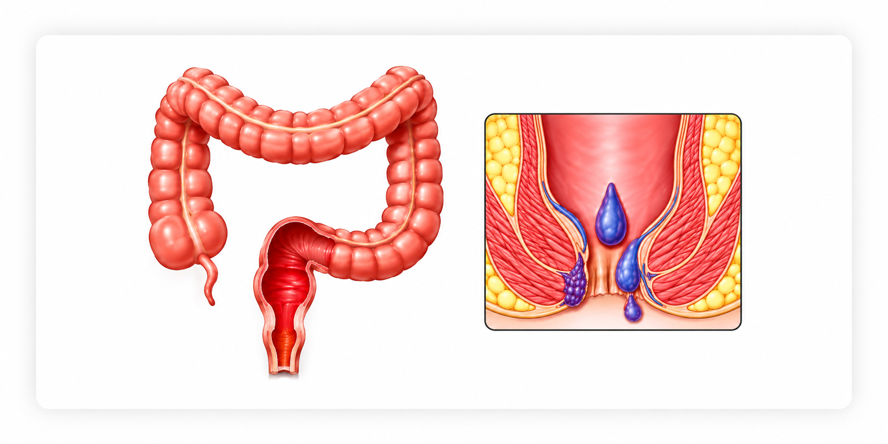

Blood in the stool, on the toilet paper or in the toilet bowl is a sign that something needs to be checked. Piles and fissures are the most common causes near the anus, and both are treatable.
Bleeding should always be examined, because other conditions can look the same. Dr. Pradipkumar Tupere, a proctologist and general surgeon at Navoday Clinic in Kharadi, Pune, examines you, finds the source and explains the next step. If the cause lies higher in the digestive tract, he advises the right tests and referral.
Book Appointment Call or WhatsApp
At a glance
| Topic | In brief |
|---|---|
| What it is | Blood seen in the stool, on the toilet paper or in the toilet bowl. |
| What it can look like | Bright red (usually from near the anus), dark red or maroon, or black and tarry (from higher in the digestive tract). |
| Common causes | Piles, fissure and fistula; less often polyps, infection, inflammatory bowel disease or cancer. |
| See a doctor if | Bleeding repeats, lasts more than a few days, or is new after age 40. |
| Get emergency care if | Bleeding is heavy, you feel faint or dizzy, or the stool is black and tarry. |
| Where | Navoday Clinic, Kharadi, Pune. |
When to see a doctor for blood in the stool
Get emergency care now if
- Bleeding is heavy or will not stop.
- You feel faint, dizzy, weak or breathless, or your heart is racing.
- The stool is black, tarry and foul-smelling.
- You have severe abdominal pain, or you are vomiting blood.
Go to the nearest hospital emergency department or call 112. Do not wait for a clinic appointment.
See a doctor soon, within days, if
- Bleeding repeats, or continues for more than a few days.
- The bleeding is new and you are over 40.
- Your bowel habit has changed, or your stools have become thin.
- You are losing weight without trying, feel unusually tired or look pale.
- A close relative has had bowel cancer or polyps.
- You also have pain, fever or discharge near the anus.
What the colour and pattern may mean
| What you see | What it may mean | What to do |
|---|---|---|
| Bright red blood on the paper, or a few drops in the bowl | Often piles or a fissure near the anus. | Book an examination. Do not treat yourself for weeks. |
| Blood streaks on the outside of a hard stool, with sharp pain | Often a fissure. | Book an examination. |
| Dark red or maroon blood mixed with the stool | Bleeding from higher up in the colon. | See a doctor promptly. Tests may be needed. |
| Black, tarry, foul-smelling stool | Bleeding from the stomach or upper bowel. | Seek emergency care the same day. |
| Blood with mucus, diarrhoea or cramps | Infection or inflammatory bowel disease. | See a doctor soon. |
Colour is only a clue. Only an examination finds the cause.
What can cause blood in the stool
Most bleeding seen with a bowel movement comes from near the anus and can be treated. Some causes lie higher in the bowel and need different tests, which is why every bleed needs an examination.
| Cause | Typical clues | Next step |
|---|---|---|
| Piles | Bright red blood, often little pain, sometimes a lump. | Examination. See the Piles page. |
| Anal fissure | Sharp pain with a bowel movement, a little blood on the paper. | Examination. See the Anal Fissure page. |
| Anal fistula or abscess | Discharge, boils or pain near the anus. | Examination. See the Anal Fistula page. |
| Polyps or growths in the rectum or colon | Painless bleeding, sometimes mixed with the stool. | Colonoscopy. |
| Infection or inflammatory bowel disease | Diarrhoea, mucus, cramps, urgency. | Tests and medical treatment. |
| Bowel cancer | Change in bowel habit, thin stools, weight loss, tiredness. | Colonoscopy and prompt referral. |
Blood in the stool during pregnancy
Piles and fissures are the usual causes, because of pressure and constipation, but bleeding in pregnancy should still be checked by a doctor.
Finding piles does not rule out another cause. Dr. Tupere decides on further tests from your age, your symptoms and what he finds on examination.
How the cause of bleeding is found
Dr. Tupere starts with questions and an examination, and moves to tests only when they are needed.
01
Your history
He asks about the colour and amount of blood, any pain, your bowel habits, weight changes, your medicines (especially blood thinners and painkillers such as aspirin) and any family history of bowel disease.
02
Examination
He examines the area around the anus, checks the anal canal and, if needed, looks inside with a short viewing tube called a proctoscope. This helps identify piles, fissures, fistulas and growths near the anus.
03
Tests when needed
A blood test checks for anaemia, and a colonoscopy is advised when your age, your symptoms or the findings point to a cause higher up in the bowel.
A colonoscopy may be advised even when piles are found, because piles and other conditions can exist together.
What happens after the cause is found
Treatment follows the cause. Dr. Tupere treats the causes near the anus and, where the cause lies elsewhere, advises the right tests and a referral.
| If the cause is | What happens next |
|---|---|
| Piles | Treatment depends on the grade: diet and medicines, or a procedure. See the Piles page. |
| Anal fissure | Simple care first, then a procedure if it does not heal. See the Anal Fissure page. |
| Anal fistula or abscess | Drainage and, usually, a procedure to close the tunnel. See the Anal Fistula page. |
| A polyp or growth | A colonoscopy to remove or sample it, with referral if needed. |
| Infection or inflammatory bowel disease | Tests and medical treatment, with referral to a gastroenterologist if needed. |
While you wait for your appointment
- Note when the bleeding happens, its colour and how much there is.
- Eat more fibre, drink enough water and avoid straining.
- Do not stop prescribed medicines, including blood thinners, without asking your doctor.
- Do not rely on creams or home remedies for weeks without an examination.
- Seek emergency care if the bleeding becomes heavy.
Consult Dr. Pradipkumar Tupere for rectal bleeding
Dr. Pradipkumar Tupere is a proctologist and general surgeon with an MBBS and an MS in General Surgery. He examines patients with bleeding from the anus and rectum, treats the common causes near the anus, and advises further tests or a referral when the cause lies higher up.
What to expect at your visit
- Book: Call, message on WhatsApp or use the form. We confirm your appointment slot. If your bleeding is heavy, do not wait for an appointment and go to an emergency department.
- Bring: Any earlier reports, such as a haemoglobin test or a colonoscopy, a list of the medicines you take (especially blood thinners and aspirin), a note of when the bleeding happens and what it looks like, and your questions.
- Consultation and examination: Dr. Tupere listens to your symptoms and examines you. Bleeding is a common reason to visit, and you can discuss your symptoms openly.
- Your plan: He explains what he found and what happens next. If your age or symptoms call for a colonoscopy, he explains why the test is needed and discusses the arrangements.
If a procedure is advised: You are guided through preparation, the procedure and recovery. Recovery time depends on the cause and the procedure.
Blood in the stool: frequently asked questions
No. Piles are a common cause, but fissures, fistulas, polyps, infections, inflammatory bowel disease and bowel cancer can also cause bleeding. Only an examination, and sometimes a colonoscopy, finds the cause.
Get emergency care for heavy bleeding, dizziness or fainting, black tarry stool or severe abdominal pain. See a doctor soon if the bleeding repeats, lasts more than a few days, is new after age 40, or comes with a change in bowel habit, weight loss or tiredness.
Bright red blood usually comes from near the anus, most often from piles or a fissure. It does not rule out a cause higher up, so bleeding that is new or repeated should still be examined.
Painless bright red bleeding is typical of piles, but polyps and other growths can also bleed without pain. Because pain does not tell the cause, painless bleeding that repeats should be examined.
Yes. Hard stools and straining can tear the anal lining, which is a fissure, or irritate piles, and both cause bright red blood. Bleeding with constipation still needs an examination if it repeats.
Piles and fissures are the usual causes, because of pressure and constipation. Bleeding in pregnancy should still be checked by a doctor, so that other causes are not missed.
An examination of the anus and anal canal, with a proctoscope if needed, finds the causes near the anus. A blood test checks for anaemia, and a colonoscopy looks at the colon when your age, symptoms or findings call for it.
Bleeding from piles or a fissure often stops by itself and can return. A bleed that has stopped is still worth examining if it has happened more than once.
You can see a proctologist or a general surgeon who treats anorectal conditions, or a gastroenterologist for a cause higher up. Dr. Pradipkumar Tupere is a proctologist and general surgeon who consults at Navoday Clinic in Kharadi, Pune, and he refers you for further tests when needed.